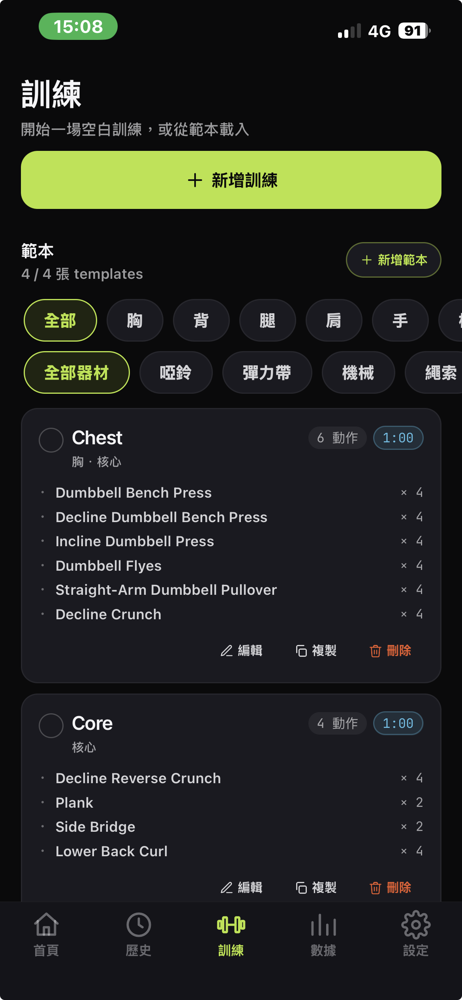
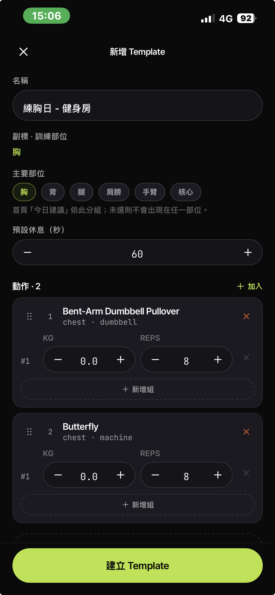
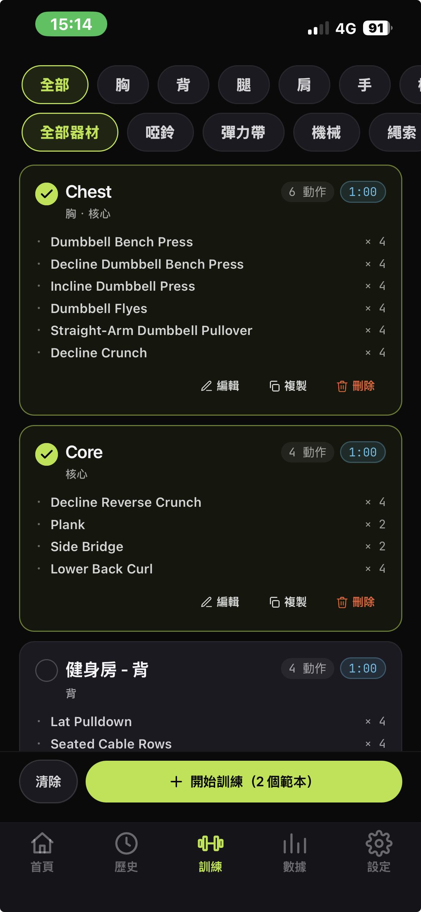
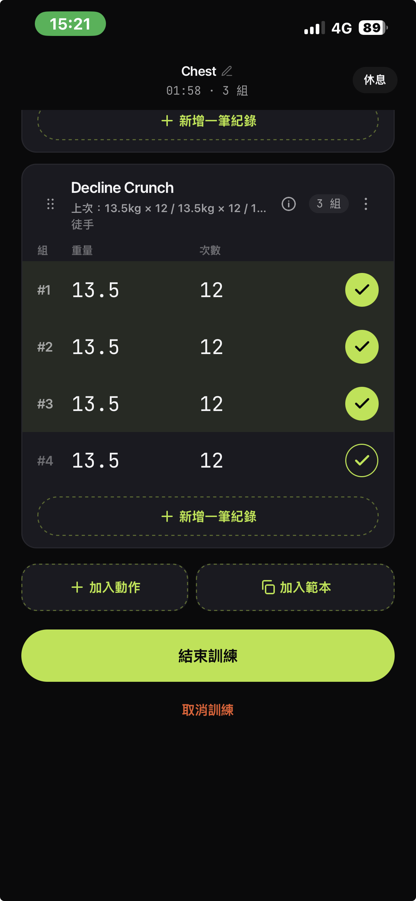
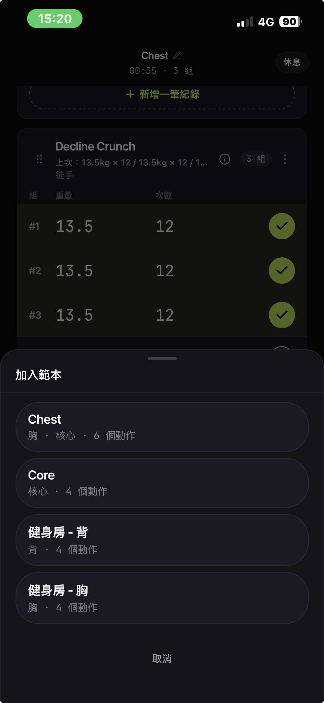
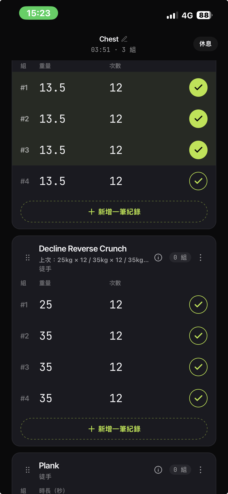
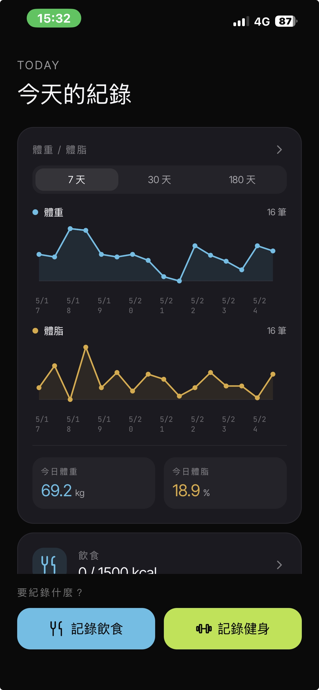
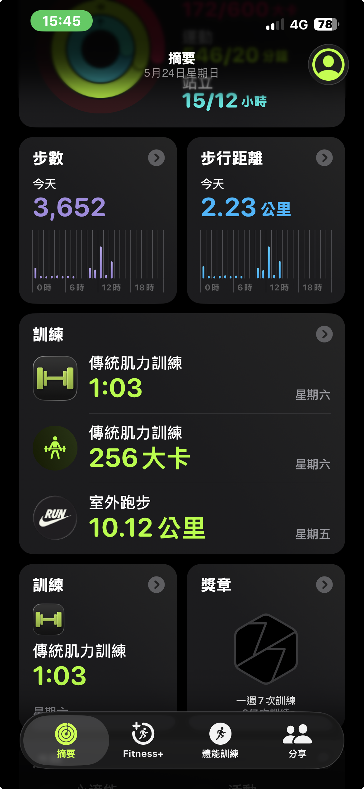
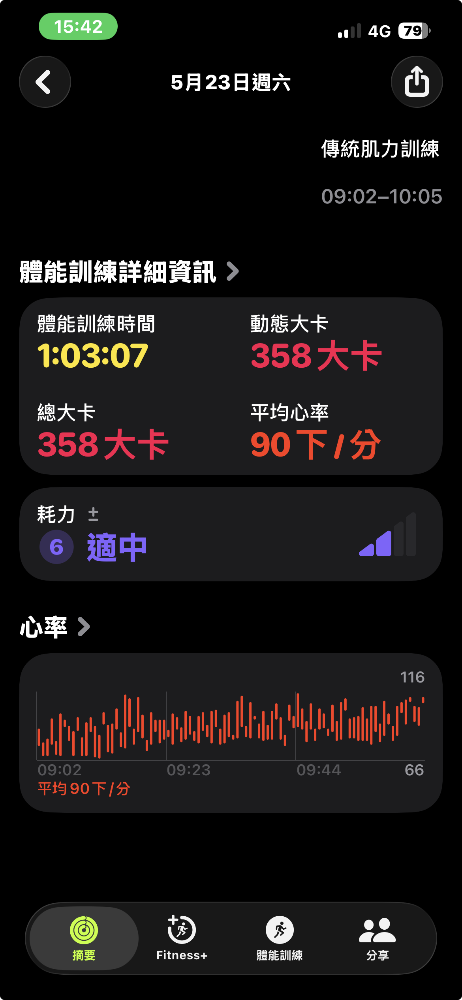

[一言不合自己寫 4] 找不到滿意的健身 app 就自己弄一個 - Workout Tracer
有健身紀錄習慣的人都多少有聽過 Strong app，但總是得要訂閱費才能自由使用全部功能。不想付費，又有想要的客製化功能，那不如就捲起袖子來弄一個最合適自己的健身紀錄 app 吧！

前情提要
我是個長期重訓的人。
不算什麼健身房達人，但每週固定三到四練，這個習慣已經養了好幾年。
跟很多人一樣，我手機裡裝的是 Strong。
Strong 真的是一款很棒的健身紀錄 app ── 介面乾淨、紀錄輸入順手、休息計時也做得很好。
我在 App Store 試用了不少健身 app，也沒看到比它更舒服的選擇。
但 ── 用久了之後，還是有遇到幾個問題 …
痛點 1：想加個菜單，被叫去訂閱
我訓練的時候習慣拆部位練，大致上是「大肌群搭配小肌群」的原則。
但身為一個三心二意的人，我的訓練菜單其實一直在變（我就花心）。
有時候想多塞一組反向飛鳥進特定課表、過陣子又學了新的動作想加進去變成固定課表。
照理講，「新增一個 template」這種事情，應該跟「在記事本開一頁新筆記」一樣輕鬆才對 ──
但 Strong 的免費版只給你幾個 template 額度 Q_Q
超過就跳訂閱牆（一次性買斷要 3000 多台幣）。
加上健身房跟家裡的器材根本不一樣 ── 在家用啞鈴練胸是一套、到健身房用槓鈴 / 史密斯架又是另一套。
要把每個場景 × 每個部位的菜單都記清楚，template 的數量直接爆炸。
因此覺得，如果可以無限新增 template 就好了。
痛點 2：練到一半想加組核心，沒辦法
這個更踩中我每天的痛點。
我自己練的習慣是這樣的：今天主練胸，但練完最後一個動作如果還有體力 ── 我會想多加 3 組核心。
照理講，「在現有的 session 上面，再疊一個核心 template 進來」應該是個很基本的需求對吧？
但目前的健身 app（不只 Strong），幾乎都把「一次 workout = 一個 template」綁死了 ──
你練到一半，沒辦法把另一個 template 的動作「混進來」這次的 session。
因此希望可以「練到一半，隨時再把另一個 template 套疊進來」。
痛點 3：身體的數值，住在另一個 app 裡
我每天早上量體重體脂之後，數據會自動進到 Apple 健康 ──
然後它就 … 安靜地住在 Apple 健康裡，跟我的健身紀錄完全沒有對話。
我想看「最近一個月深蹲重量的成長 vs. 體重的變化」── 沒辦法，因為一邊在 Strong、一邊在 Apple 健康。
我得自己截圖、自己腦補對比。
因此希望，app 裡可以直接看到 Apple 健康的體重 / 體脂走勢。
除了上述三個痛點以外，我每次健身的時候，腦袋裡都還會冒出一堆零碎的功能想法。
但現有的健身 app，沒有一套能完全符合我的需求。
腦袋裡那個工程師魂就又開始 compile：
「既然都繳費 Claude Max 了，那不自己弄一個適合自己的健身 app，對得起 Max 方案的訂閱費嗎？」
於是秉持著 ──
『一言不合，就自己做』的原則
就有了這個 Workout Tracer 的誕生
《Workout Tracer》是什麼
一個練起來最符合自己健身習慣的 app。
目前只跑在 iOS 上（對，因為我自己只有 iPhone）。
是用 React Native + Expo 寫成的 native app，搭配 Apple HealthKit 拉體重體脂、Go + PostgreSQL 跑在家裡退役的 MacBook Pro 2017 上當 backend 做資料同步（對，那台 2017 終於有事做了）。
跟前幾篇一樣，這就是一個「為自己一個人」量身做的小玩具。
Claude Design
老實說一開始我對「設計」這件事根本沒什麼想像。
我的計畫是：先把功能寫出來能用、UI 用最樸素的灰底白卡先擋著、之後再說。
正準備要開發的時候，Claude Design 剛好熱騰騰的推出。
用著「姑且一試」的心態，我就把寫到的 spec 告個段落，順手丟給 Claude Design。
請它「幫我設計一下這個 app 的 UI 風格」──
然後就出門吃飯了 ──
回來打開電腦 ──


“Holy S…”
它已經幫我把所有畫面都設計好了。
深色底配 lime 螢光綠的主色、卡片邊角、字級層次、按鈕的圓角、空狀態的小插圖 ⋯⋯
那種感覺就像是我請了一位資深設計師、結果他只用了我吃一頓晚餐的時間，就把整套 design system 連同所有頁面全部搞定了。
能做到這種程度的設計，對於我這個前設計師來說，至少我是買單啦 ～ XD
功能介紹
那就照著上面三個願望，一個一個來看實際做出來的樣子。
功能 1：template 自由！想加就加！
從此之後不用看 Strong 的臉色了！（廢話，自己寫的 app 當然沒有訂閱牆 XD）

點 新增範本 就開一份新菜單、想拆多細就拆多細：胸日、背日、腿日、推日、拉日、上半身、下半身 ── 全都可以。
每個 template 裡面可以塞動作、塞組數預設、塞休息時間預設，跟 Strong 該有的差不多。

這個功能本身沒什麼了不起，但「不用付錢」這件事本身就讓人心情很好 😆
功能 2：隨時把另一個 template 加進來
這個對我來說是 app 內最 killer 的功能。
是可以隨時把訓練菜單加進來的能力。
實際的使用情境有可能是：
- 預期好今天想練胸跟核心
- 練胸到一半想追加其他部位（例如：核心）
情境一：預期好今天想練胸跟核心
這個情境最單純 ── 在開始訓練前，我就先把今天想練的 template 全部勾起來。
像今天打算「胸 + 核心」一起練，那就在 template 列表把兩份都打勾。
按下開始之後，這次 session 就會把兩份菜單依序合併成一份，從上到下一路練完。

情境二：練胸到一半想追加其他部位（例如：核心）
點下方的 + 加入範本。

從 template 列表選自己想要追加的菜單（例如：Core）

那組動作就被追加進這次訓練的最後。

練完之後，這次的歷史紀錄就會完整顯示「胸日 + 核心」的合併菜單。
對我來說這個功能讓「健身菜單」這件事，從一份寫死的清單，變成可組合的積木
── 想多加就多加，想換段就換段（就是這麼任性）
每次訓練用到這個功能就讓我覺得整個 side project 值得了！
功能 3：組間休息倒數提醒
這個功能對我來說幾乎是必備的 ── 每次訓練都會用到。
健身的時候很容易發生：練到組間休息，滑了一下手機、回個 Line、不知不覺 10 分鐘過去 ── 然後肌肉都涼了。
於是就有了這個 ──
每組之間如果太久沒回到 app 操作，會推一個 local notification：「欸該回來練囉」。
點通知就 deep link 回到 active session 那頁。
少了它，我就會反覆掉進「練到一半被手機吃掉」的坑 ── 對訓練品質的影響比想像中還大。
跟 Apple Health 打通雙向同步
這部分本來想塞進上面的「功能介紹」── 但想想覺得它配得上自己一個 section。
因為 Workout Tracer 跟 Apple 健康之間，其實是雙向的：
- 讀：從 Apple 健康抓體重 / 體脂進來
- 寫：把每次的訓練紀錄推回 Apple 健康
讀：體重 / 體脂從 Apple 健康灌進來
我每天早上量完體重體脂，數據會自動進到 Apple 健康。
Workout Tracer 接著把那些數值拉進「統計」頁，讓我直接在 app 裡看到 ──
- 過去 30 天 / 90 天的體重走勢
- 體脂率變化
不用再切去 Apple 健康截圖、再切回健身 app 對照。

寫：訓練紀錄回寫到 Apple 健康
另一個方向是：每次 session 練完按下「完成」之後，這次的 workout 會自動推回 Apple 健康。
打開 Apple 健康 App，那次訓練就跟 Apple Watch、iPhone 量到的其他運動訓練並排，一起出現在當天的活動環裡。


換句話說 ──
Workout Tracer 寫進去的紀錄，跟 Apple Watch 量到的資料是同一個層級的公民。
對我來說，這個方向最大的意義是「訓練資料不會被綁死在我這個 app 裡」 ── 哪天我懶得維護這個 side project 了，過去那些訓練歷史也都還會躺在 Apple 健康裡，不會跟著 app 一起蒸發。
本來想省錢，但最後還是得掏錢 Q_Q
老實說，這個雙向整合我不是一開始就做的。
要把 HealthKit 接進來（不管讀或寫），都得先繳一年 99 美金的 Apple Developer Program。
身為一個客家人工程師，看到那個訂閱按鈕的當下，我腦袋第一個冒出來的不是「來訂吧」，而是 ──
（有沒有其他的 workaround 可以繞過去!？ 🤣）
於是我先試了 iPhone 的捷徑（Shortcuts）。
理論上：捷徑可以讀 Apple 健康的資料、組 JSON、再用「取得 URL 內容」POST 到我自己的 backend ── 邏輯上完全走得通。
但事情沒有想像中那麼簡單 …
當我開始設定的時候，在 iPhone 那個小小的捷徑編輯器裡，一格一格慢慢拼出一個 JSON payload 真的非常痛苦（我光是設定一個欄位就想直接關掉）。
而且捷徑沒辦法即時雙向同步，只能透過自動化設定「每天某個時間跑一次」，總覺得不夠直覺。
糾結了一個禮拜之後 ──
（算了！99 美金當作好奇心稅吧。）
抱著「想看看正式開發體驗到底差多少」的心態，就刷下去訂了一年。
結果開發體驗瞬間天差地遠 ── 第一次跑通原生 HealthKit 權限視窗、看到體重數值直接灌進 app 的那個瞬間，整個人用體驗一下子被往上拉了一大截。
從此再也沒有想念過捷徑那條路 😆
iOS HealthKit 串接的部分有一些小坑（權限請求時機、單位轉換、背景同步），這個故事就別說了 …
技術 Stack
- Frontend： React Native + Expo（Dev Client 模式，非 Expo Go）
- 本地資料庫： WatermelonDB（local-first，所有資料先寫本地，背景同步）
- Backend： Go + Gin + PostgreSQL，跑在我退役的 MacBook Pro 2017 上 Docker
- 設計系統： Claude 設計的 dark + lime 配色，我幾乎沒怎麼動
- 平台整合： Apple HealthKit（雙向：讀體重 / 體脂、寫 workout 紀錄）+ iOS Local Notifications
整個專案從 spec 到 MVP 大概兩個月，後續用 Claude Code 的 spec → plan → implementation 流程持續加功能。
中間還有一段「一開始是用 PWA 做的，結果體驗實在太卡，整包砍掉重練成 React Native」的繞路故事。
不過目前這個原生版本，用起來真心滿意。
後記
這個 side project 寫到目前，已經是我自己每次訓練都在用的 app 了 ──
至於 Strong 呢？
它已經被我從手機桌面移到第二頁，慢慢淡出我的肌肉記憶。
回頭看，這篇文章想紀錄的其實不是「我做了一個健身 app」這件事本身，而是 ──
原來，自己不在被市面上現成的 app 限制
── 而去打造一個專屬自己的 app 出來。
如果是 2-3 年前 ──
光是「我又不會寫 iOS」這個門檻，就足以把我整個攔下來。
我本業是後端工程師，沒寫過 Swift / Objective-C，雖然有嘗試著要學著寫 app，但依然沒有成功上手就是了 Q_Q
為了一個 side project 從頭學一整套陌生 stack？
以前的我大概翻幾篇教學文就棄坑了。
但現在 ── Claude Code 跟我邊聊邊把 React Native + HealthKit 整套串通，那個過程根本不像「學」，比較像「邊用邊問」。
「沒寫過這個技術」這個過去用了無數次的藉口，從這一刻起完全失效。
目前對這個 app 還算滿意，但明天可能又會有新的想法，隨時可以加上去。
例如，目前正在幫這個 app 加上飲食紀錄的功能，不過還在開發中，未來完成再另開一篇紀錄。
這篇紀錄成分居多，如果你居然有看到這裡的話 ── 真的是十分感謝！！！
我們下次見，Bye ～